Marca la asistencia de muchas personas a la vez con una plantilla de Excel o CSV. Primero consigue la plantilla y revisa el formato.
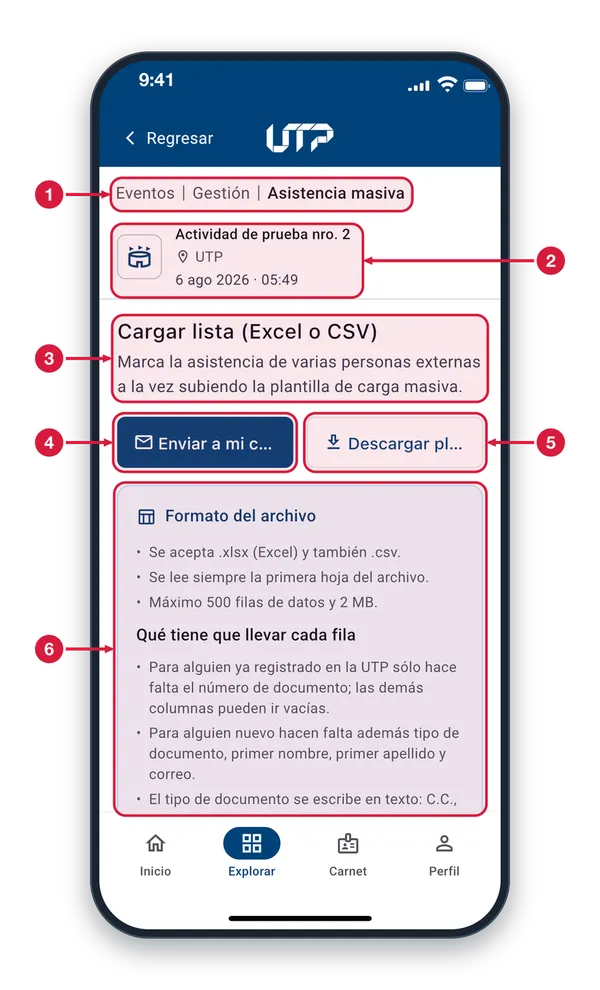
Ruta: Asistencia masiva Indica que estás en Eventos > Gestión > Asistencia masiva, la pantalla para marcar asistencia con un archivo.
Actividad y sesión La actividad para la que vas a marcar asistencia: su nombre, el lugar y la fecha y hora de la sesión.
Cargar lista (Excel o CSV) Marca la asistencia de varias personas a la vez subiendo un archivo. Puedes incluir personas de la UTP y personas externas.
Enviar a mi correo Toca para recibir la plantilla de carga masiva en tu correo electrónico y llenarla desde tu computador.
Descargar plantilla Toca para descargar la plantilla de carga masiva en tu teléfono. Llénala con las personas y vuelve a subirla.
Formato del archivo Cuadro de ayuda con las reglas del archivo: tipos permitidos, límites y qué datos lleva cada fila. Se explica en «Formato del archivo».
Formato del archivo2 de 9
Antes de llenar la plantilla (9 columnas), lee este cuadro: tipos de archivo, límites y los datos que pide cada fila.
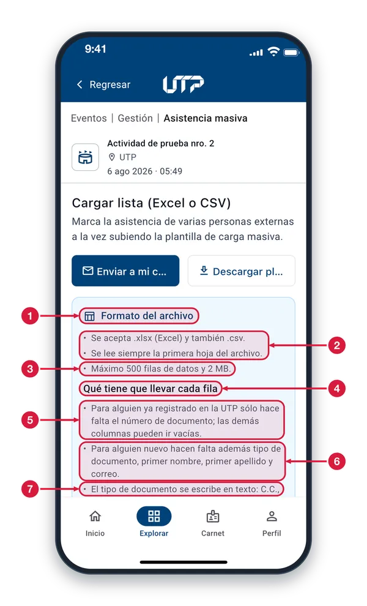
Formato del archivo Cuadro de ayuda con todas las reglas que debe cumplir tu archivo. Léelo completo antes de llenar la plantilla.
Tipo de archivo y hoja Se acepta Excel (.xlsx) y también CSV (.csv). En Excel, la app lee siempre la primera hoja del archivo: los datos deben ir ahí.
Límite de filas y peso Máximo 500 filas de datos y 2 MB. Si tu lista es más larga, divídela en varios archivos y súbelos uno por uno.
Qué lleva cada fila La plantilla tiene 9 columnas: documento, tipo de documento, nombres, apellidos, fecha de nacimiento, celular y correo. Solo el documento se pide siempre.
Persona ya en la UTP Si la persona ya está registrada en la UTP, escribe solo su número de documento. Las demás columnas pueden ir vacías.
Persona nueva Si la persona no está registrada, escribe además el tipo de documento, el primer nombre, el primer apellido y el correo.
Tipo de documento en texto Escríbelo con letras, no con números: C.C., C.E., T.I., NIT, Pasaporte, PPT, Registro civil de nacimiento o Documento de identidad extranjera.
Zona de carga del archivo3 de 9
Al final de la pantalla está la zona donde eliges tu archivo Excel o CSV. Repasa las reglas antes de subirlo.
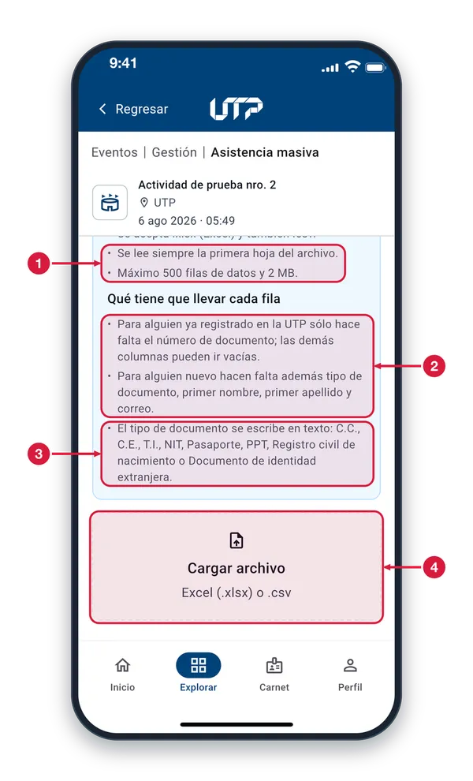
Reglas de lectura Recuerda: se lee solo la primera hoja del archivo, que puede tener hasta 500 filas de datos y pesar como máximo 2 MB.
Persona registrada o nueva Una persona ya registrada en la UTP necesita solo su número de documento. Una persona nueva necesita además tipo de documento, primer nombre, primer apellido y correo.
Tipo de documento en texto Escribe el tipo con letras: C.C., C.E., T.I., NIT, Pasaporte, PPT, Registro civil de nacimiento o Documento de identidad extranjera. No uses números ni códigos.
Cargar archivo Toca esta zona para elegir tu archivo Excel (.xlsx) o CSV. Se abre el explorador de archivos del teléfono (ver «Elegir el archivo»).
Elegir el archivo4 de 9
Al tocar «Cargar archivo» se abre el explorador del teléfono. Elige tu plantilla llena y volverás a esta vista previa.
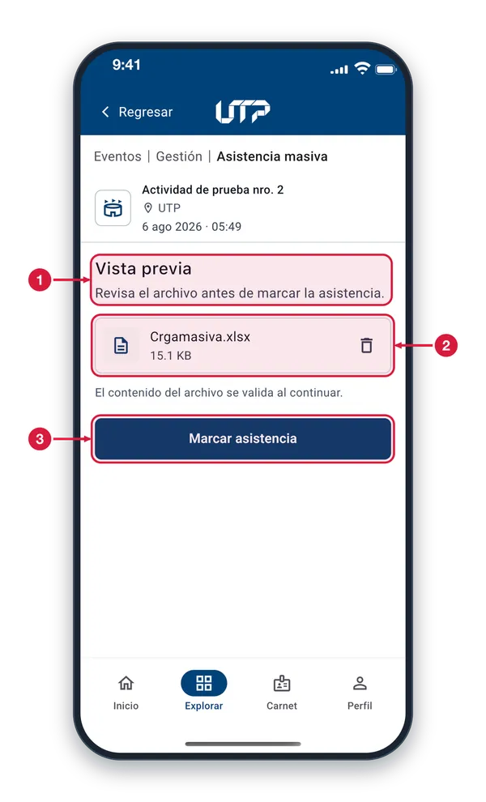
Vista previa Cuando eliges el archivo, la pantalla pasa a «Vista previa» para que compruebes que es el correcto antes de marcar la asistencia.
Archivo elegido Muestra el nombre y el peso del archivo que escogiste. Debe estar guardado en tu teléfono o en iCloud para poder elegirlo.
Marcar asistencia Toca para continuar: la app revisa el archivo y te muestra un resumen para que confirmes (ver «Resumen antes de confirmar»).
Archivo cargado5 de 9
Con el archivo elegido ves su nombre y su peso. Puedes descartarlo o continuar con «Marcar asistencia».
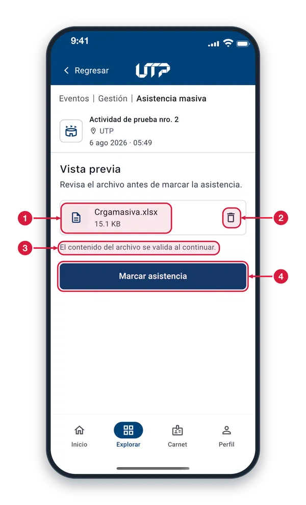
Nombre y peso del archivo Comprueba que sea el archivo correcto y que no supere los 2 MB permitidos.
Papelera Toca la papelera para descartar el archivo y elegir otro, por ejemplo si te equivocaste de archivo o necesitas corregirlo.
Aviso de validación Hasta ahora solo elegiste el archivo: sus filas todavía no se revisan. Eso ocurre cuando continúas con «Marcar asistencia».
Marcar asistencia Toca para revisar el archivo y abrir la ventana de resumen. Aún no se registra nada: primero confirmas.
Resumen antes de confirmar6 de 9
Antes de registrar nada, la app resume el archivo: cuántas filas trae, cuántas son de la UTP y cuántas serían externas.
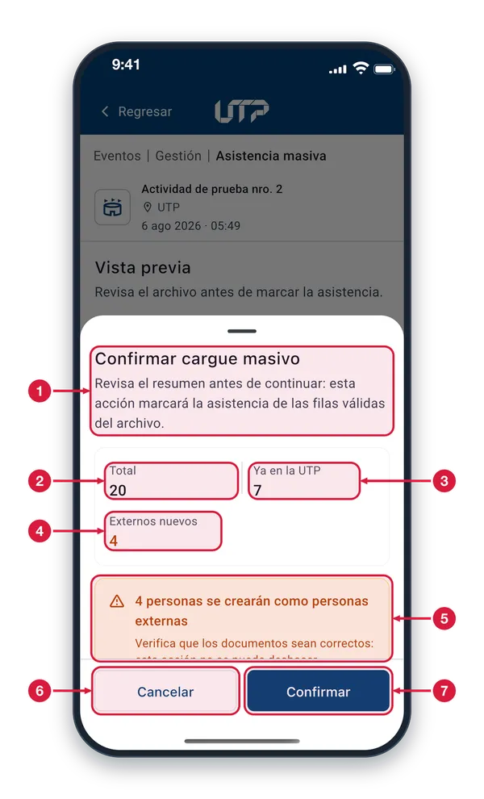
Confirmar cargue masivo Ventana de confirmación: al continuar se marcará la asistencia de las filas válidas del archivo. Lee el resumen antes de seguir.
Total Todas las filas de datos que trae el archivo (en el ejemplo, 20).
Ya en la UTP Cuántas filas corresponden a personas ya registradas en la UTP (en el ejemplo, 7). Para ellas basta el número de documento.
Externos nuevos Cuántas filas se tratarían como personas externas nuevas (en el ejemplo, 4). Se muestra en naranja para que no pase inadvertido.
Aviso de personas externas Avisa que esas personas se crearán como externas y pide verificar que sus documentos sean correctos, porque la acción no se puede deshacer.
Cancelar Cierra la ventana sin registrar nada. Así puedes corregir el archivo o elegir otro.
Confirmar Envía el archivo y empieza el registro de la asistencia fila por fila (ver «Enviando el archivo»).
Enviando el archivo7 de 9
El archivo se procesa fila por fila. Espera en esta pantalla hasta que aparezca el resultado.
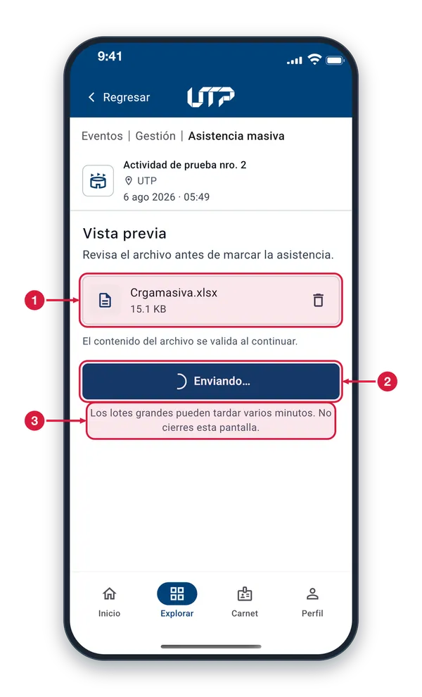
Archivo en proceso Es el archivo que se está enviando, con su nombre y su peso.
Enviando… El botón cambia a «Enviando…» y muestra un círculo que gira mientras la app registra la asistencia fila por fila.
No cierres la pantalla Los lotes grandes pueden tardar varios minutos. Espera sin salir de esta pantalla: al terminar verás el resultado.
Resultado del cargue8 de 9
Al terminar, la app te dice cuántas filas quedaron registradas y cuántas tuvieron problemas, y te las lista.
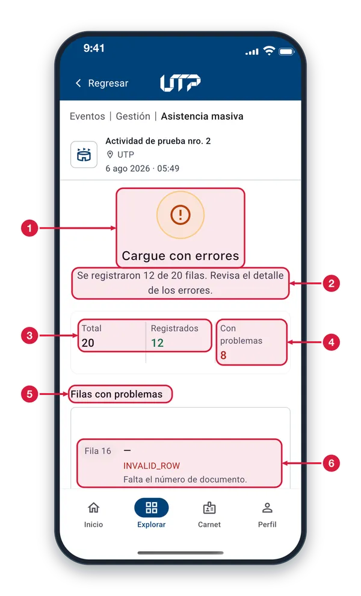
Estado del cargue El icono y el título dicen cómo terminó. «Cargue con errores» significa que algunas filas no se registraron; las demás sí quedaron registradas.
Mensaje de resultado Resume cuántas filas se registraron del total del archivo (en el ejemplo, 12 de 20) e invita a revisar el detalle de los errores.
Total y Registrados Total: las filas de datos del archivo. Registrados (en verde): las filas cuya asistencia quedó marcada correctamente.
Con problemas Filas que no se pudieron registrar (en rojo). En el ejemplo: 12 registradas + 8 con problemas = 20 del total.
Filas con problemas Debajo se lista cada fila rechazada, con su número, su documento y el motivo. Desplázate para verlas todas (ver «Detalle por fila»).
Ejemplo de fila rechazada Fila 16: el guion (—) indica que no traía número de documento. En rojo, el motivo (aquí un código, INVALID_ROW) y debajo la explicación: «Falta el número de documento».
Detalle por fila9 de 9
Cada fila que no se pudo registrar aparece con su número, su documento y el motivo, para que corrijas el archivo.
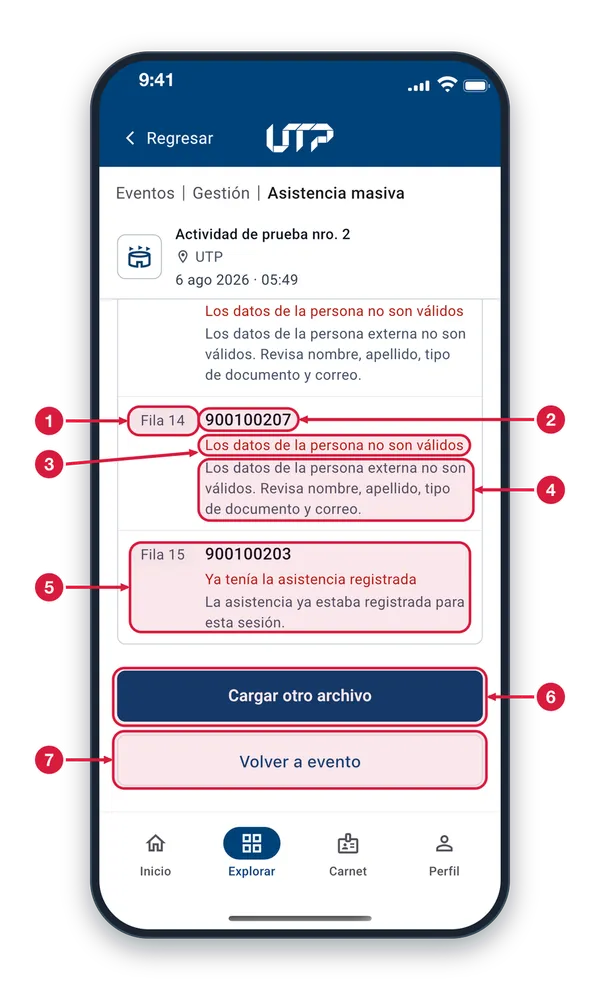
Número de fila «Fila 14» es el número de la fila de tu archivo donde está el problema. Búscala en tu Excel para corregirla.
Documento El número de documento que traía esa fila. Si la celda estaba vacía, en su lugar verás un guion (—).
Motivo del rechazo Título en rojo. Aquí: «Los datos de la persona no son válidos». Otros motivos: falta el número de documento o documento repetido en el archivo.
Qué debes corregir Explicación en gris. Aquí pide revisar nombre, apellido, tipo de documento y correo de la persona. Corrige esa fila en tu archivo.
Persona ya registrada «Ya tenía la asistencia registrada»: esa persona ya figuraba con asistencia en esta sesión, así que no hay nada que corregir en esa fila.
Cargar otro archivo Toca para subir de nuevo un archivo (por ejemplo, el tuyo ya corregido) y repetir el proceso.
Volver a evento Toca para terminar el cargue y regresar al evento.
GESTIÓN DE EVENTOS · INSCRIBIR EN LOTE
Inscribir personas en lote1 de 2
Inscribe a varias personas a la actividad con la misma plantilla de carga masiva. El proceso es igual al de la asistencia.
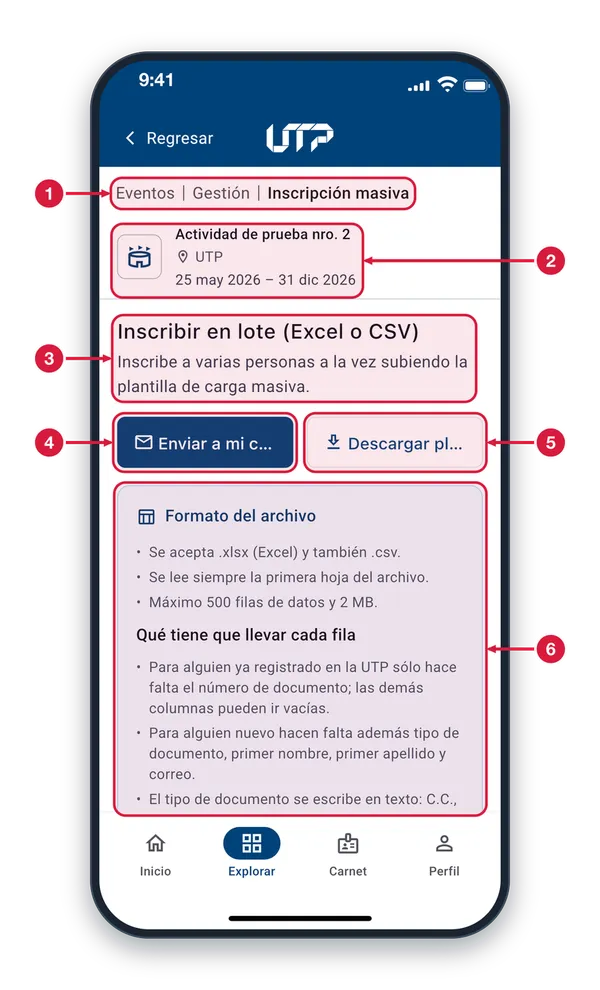
Ruta: Inscripción masiva Indica que estás en la inscripción masiva de Gestión de Eventos: aquí inscribes personas a la actividad, no marcas asistencia.
Actividad La actividad a la que vas a inscribir personas: su nombre, el lugar y las fechas en que se realiza.
Inscribir en lote Inscribe a varias personas a la vez subiendo la plantilla de carga masiva en Excel o CSV.
Enviar a mi correo Toca para recibir la plantilla de carga masiva en tu correo electrónico y llenarla desde tu computador.
Descargar plantilla Toca para descargar la plantilla en tu teléfono. Llénala con las personas que quieres inscribir.
Formato del archivo Mismo formato que la carga de asistencia: .xlsx o .csv, primera hoja, máximo 500 filas y 2 MB, y los mismos datos por fila. Desplázate para ver todo el cuadro.
Actividad sin asistencia2 de 2
Detalle de una actividad: sus datos generales y cuántas personas inscritas ya tienen asistencia. Aquí, todavía ninguna.
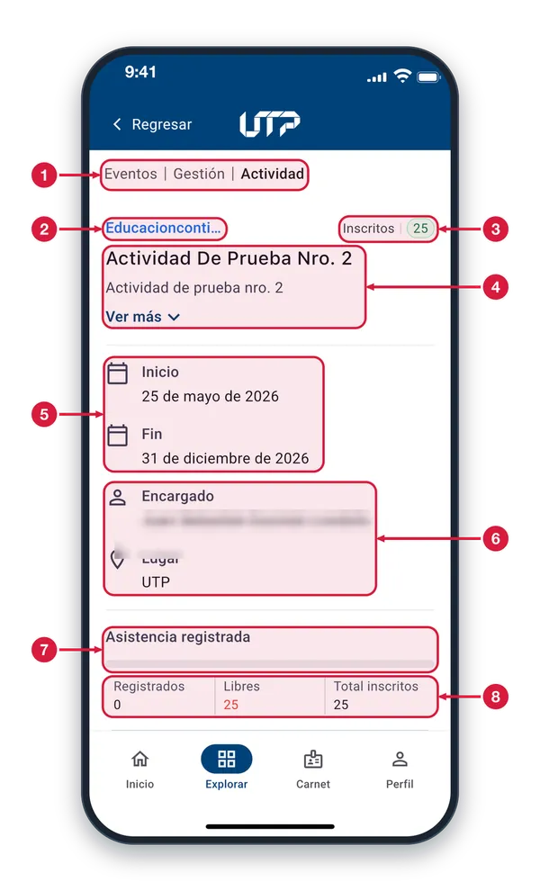
Ruta: Actividad Te ubica en el detalle de la actividad dentro de Gestión de Eventos.
Categoría Nombre de la categoría de la actividad. Si es muy largo, se corta con puntos suspensivos.
Inscritos Cantidad de personas inscritas en la actividad (en el ejemplo, 25).
Nombre y descripción El nombre de la actividad y su descripción. Toca «Ver más» para leer la descripción completa.
Fechas de inicio y fin El día en que empieza la actividad (Inicio) y el día en que termina (Fin).
Encargado y lugar El nombre de la persona responsable de la actividad y el lugar donde se realiza.
Asistencia registrada Barra de avance de la asistencia. Mientras nadie tenga asistencia registrada, la barra se ve vacía (gris).
Registrados, Libres y Total Registrados: inscritos con asistencia ya marcada (0). Libres, en rojo: inscritos sin asistencia todavía (25). Total inscritos: todas las personas inscritas (25).